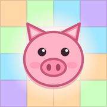

Oinkdoku
Cozy pig logic puzzles for iPhone and iPad
How to play
Place exactly one pig in every row, every column and every colored pen. Pigs can't touch, not even diagonally. Tap a square once for ✕, twice for a pig, and drag to cross out lots of squares. Stuck? Tap 💡 Hint for a step-by-step explanation.
Questions
Where is my progress saved? On your device only. It's included in your normal iPhone or iPad backup.
How do I start over? Home → Settings → Reset progress.
When does the Daily Pen change? At midnight, your local time. Everyone gets the same puzzle each day.
No sound? Oinkdoku follows your silent switch. Sound can also be toggled in Settings.